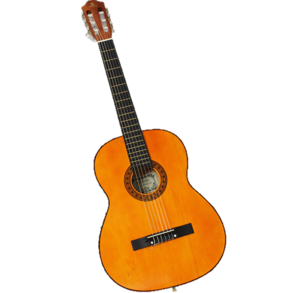

Música
A música é reconhecida por muitos pesquisadores como uma modalidade que desenvolve a mente humana, promove o equilíbrio, proporcionando um estado agradável de bem-estar, facilitando a concentração e o desenvolvimento do raciocínio, em especial em questões reflexivas voltadas para o pensamento.
Na música estão contidos três elementos: as palavras, a harmonia e o ritmo. Daí a importância da boa música.
A música penetra diretamente em nossos centros nervosos e coordena mentalmente, de maneira rápida e imediata, a divisão do tempo e do espaço, além de inspirar o gosto pelas virtudes.